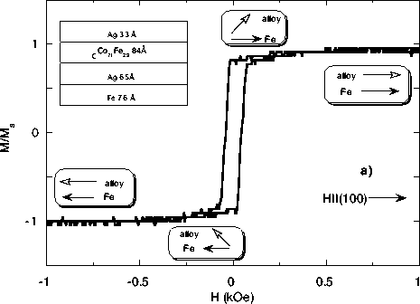
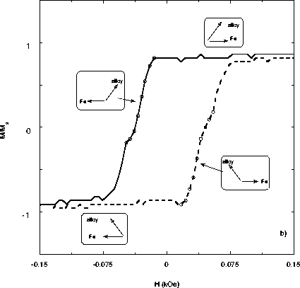
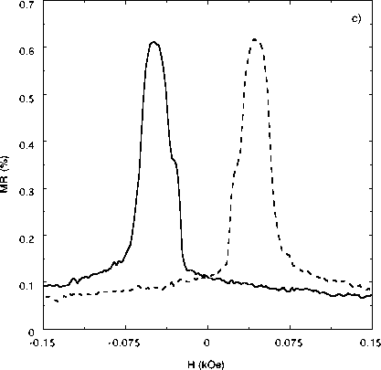

Figure 3: a) H||(100) magnetization curve
for a Fe76Å/Ag65Å/(Fe29Co71)84Å/Ag33Å
sandwich. This orientation is the easy axis for the Fe film,
which reverses in the square portion of the loop, but is the
hard axis for the alloy film, which contributes the linear
magnetization tail at higher fields.

b) Detail showing low-field behavior. Circles indicate the
field region where the moments are 135 degrees apart, as
sketched in the diagrams. The nearly horizontal parts of the
loop correspond to the two moments being oriented 45 degrees
apart for both directions of sweep (marked as in Fig. 2b)).

c) H||(100) magnetoresistance curve for the same sandwich.
The resistance is maximum in the field range where the angle
between the Fe and alloy moments is 135 degrees (as
illustrated in Fig. 3b). Dashed and solid lines are as in
part b).